Black Book 4.7 · Raycasting do Wolfenstein 3D
Renderizador 3D do Wolfenstein 3D
Como a magia acontecia em um 386
4.7.6 · Distância direta d vs distância projetada z
Correção do Efeito Fisheye
- ▶Raios medidos com a distância direta (d) causam distorção nas bordas
- ▶Solução: usar a distância projetada (z) no eixo do jogador
- ▶Linhas retas das paredes ficam geometricamente corretas
- ▶Comparação visual nos dois próximos slides
Figura 4.53 · Transformar coordenadas para o eixo do jogador
Map Space → Player Space
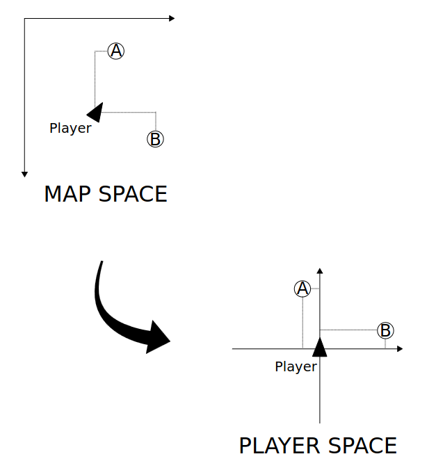
Comparativo · Parede longa revela distorção nas bordas
Antes & Depois — Parede Longa
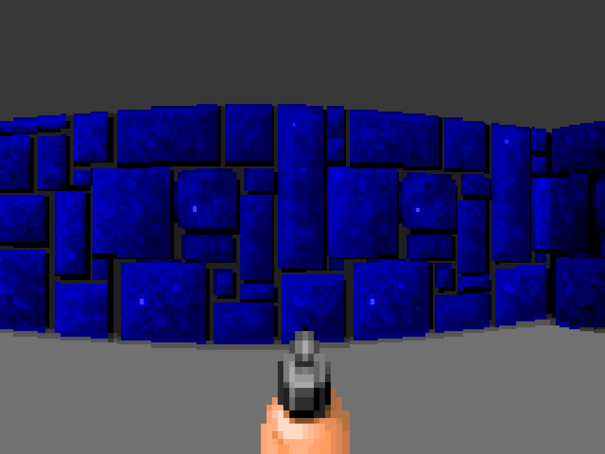
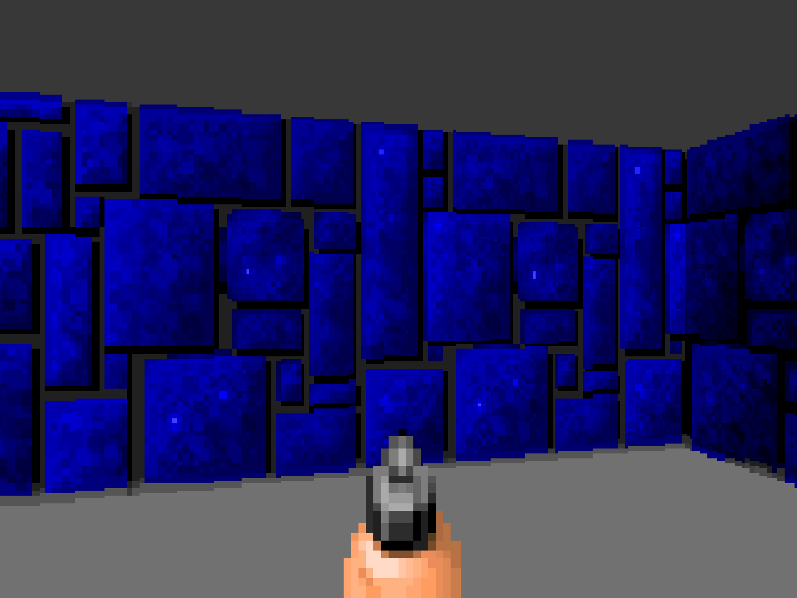
Comparativo · Porta central expõe erro de perspectiva
Antes & Depois — Porta ao Centro
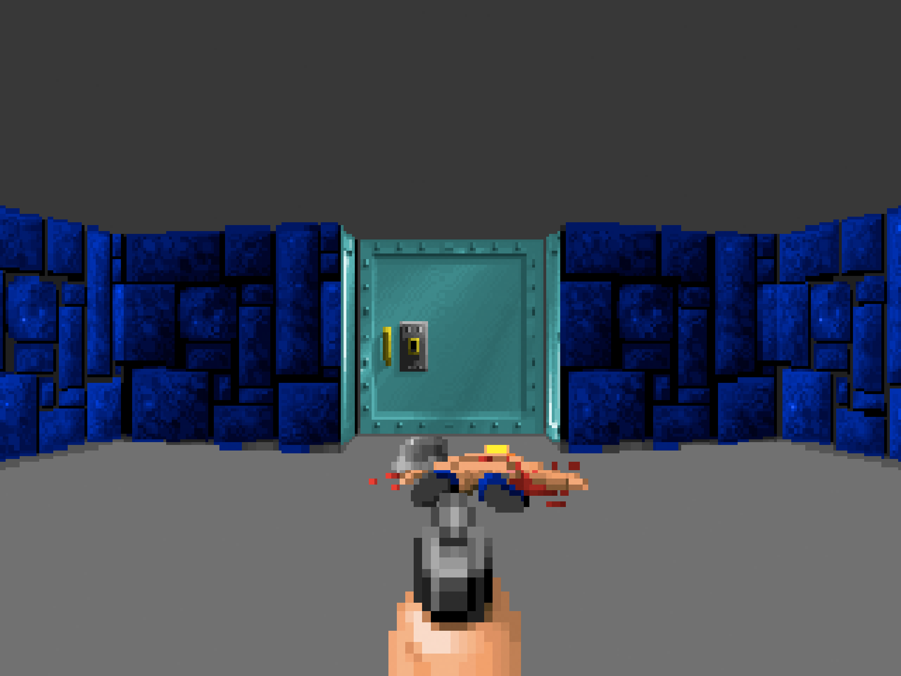
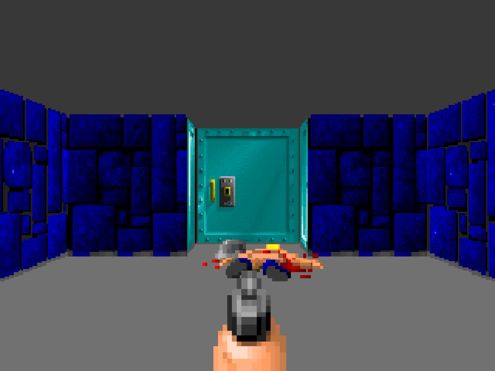
4.7.7 · Cada coluna da parede vira texel escalado
Desenhando Paredes em um 386
- ▶Altura da coluna calculada → desenhar coluna de texels escalada
- ▶CPU 386 é limitada: escalar 64 texels é caro
- ▶Wolfenstein supera os engines da época com 2 otimizações
- ▶Segredo: Compiled Scalers + Deferred Column Rendering
4.7.7.1 · Trocar cálculo por scalers pré-compilados
Compiled Scalers
- ▶Abordagem genérica usa loop + acumulador → muitas instruções
- ▶Solução: gerar funções hard-coded para cada altura no startup
- ▶256 funções pré-compiladas eliminam o loop completamente
- ▶Custo: 83.160 bytes de RAM para 136 scalers
- ▶Benefício: de dezenas de instruções para 3-7 por pixel
na tela
desenhada
4.7.7.1 · Um scaler pronto para cada altura de coluna
Cada Coluna, um Scaler Pronto
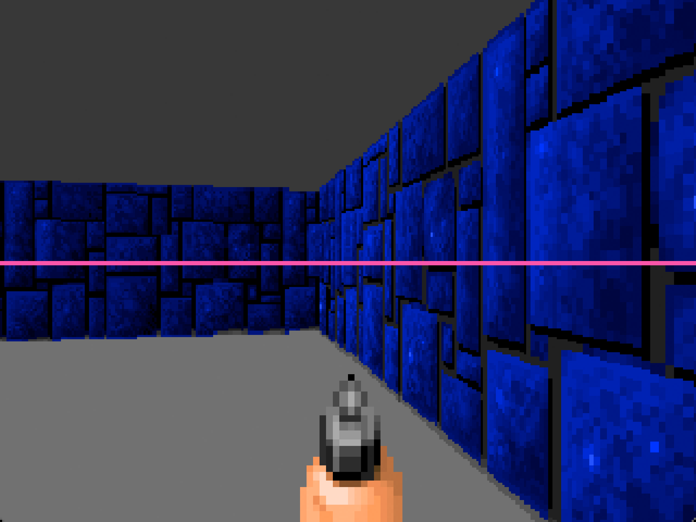
- ▶Cada coluna vertical da tela é um raio lançado
- ▶O raio devolve uma altura em pixels para a parede
- ▶O engine seleciona o scaler compilado daquela altura
- ▶320 chamadas por frame, sem loop interno
4.7.7.1 · Loop genérico substituído por bytes x86 emitidos
Do Loop Genérico ao x86 Compilado
4.7.7.1 · Gastar RAM para economizar instruções por pixel
RAM vs CPU — O Tradeoff Clássico
136 funções
por pixel
- ▶Versão original: 255 scalers = 178.479 bytes → caro demais
- ▶Otimização: acima de 76px, pular alturas (78, 82, 86…)
- ▶Resultado: 136 scalers = 83.160 bytes — custo aceitável
- ▶Artefato visual mínimo ao usar o scaler errado
- ▶Re-geração necessária ao redimensionar o canvas 3D
4.7.7.2 · Adiar colunas para desenhar em lotes
Deferred Column Drawing
- ▶Em vez de desenhar cada coluna assim que sai do raycaster…
- ▶O engine bufferiza colunas "similares" e dispara em batch
- ▶"Similar" = mesmo texel horizontal & mesma altura projetada
- ▶Até 8 colunas escritas em até 3 operações no VGA
- ▶Combina com a estrutura do hardware: 4 planos VGA em paralelo
4.7.7.2 · Agrupar colunas antes de chamar o renderer
Bufferizar Antes de Desenhar
4.7.7.2 · Máscaras VGA controlam quais pixels são escritos
VGA Plane Masking
cols 0,4,8…
cols 1,5,9…
cols 2,6,10…
cols 3,7,11…
- ▶Tela em 4 banks VGA: cols 0,4,8 → Bank 0; 1,5,9 → Bank 1…
- ▶Uma escrita pode atingir até 4 colunas de uma vez
- ▶A máscara de bits seleciona quais banks recebem o byte
- ▶Função ScalePost aplica a máscara, escreve, e roda o scaler compilado
- ▶Cada pass = (set mask) → (call compiled scaler)
4.7.7.2 · mapmasks decide 1, 2 ou 3 passes
Quantos Passes? Depende do Alinhamento
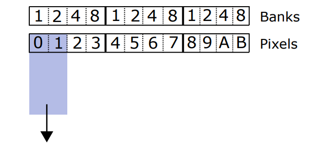
mask = 3 · 1 escrita
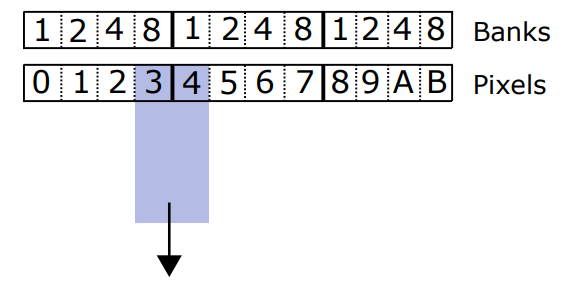
mask₁ = 8 · mask₂ = 1
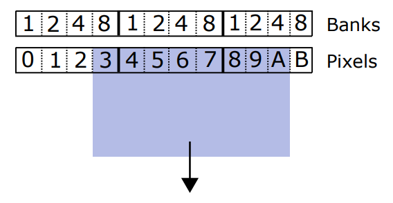
mask₁=8 · mask₂=15 · mask₃=7
4.7.7.2 · Escritas em rosa são puladas pelo renderer
Tudo em rosa é uma escrita evitada
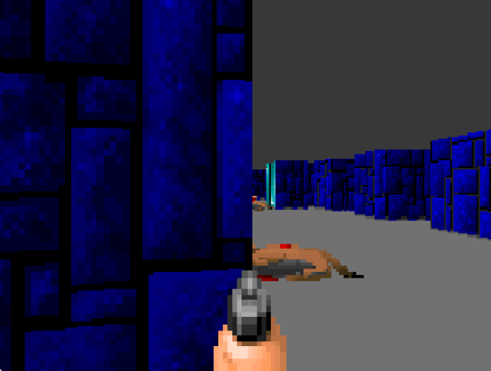
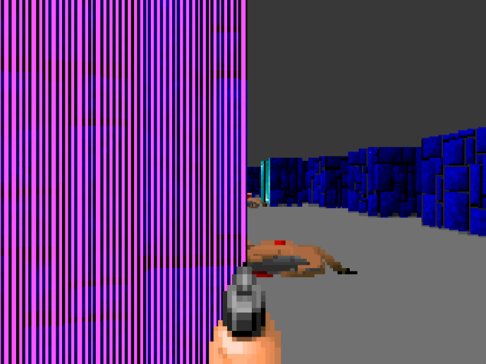
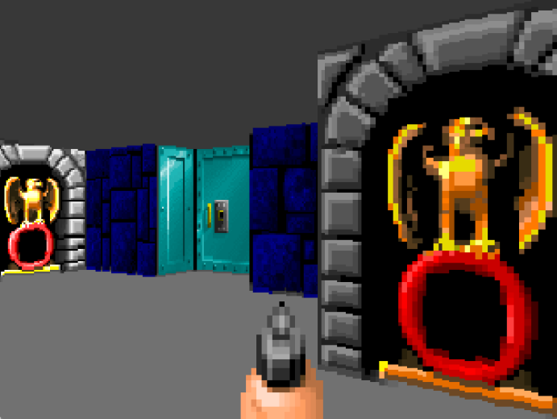
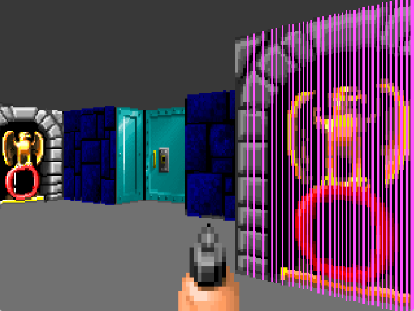
- ▶Cada faixa rosa é uma coluna que o engine NÃO precisou escrever — veio de graça com a vizinha
- ▶O ganho cresce quando o jogador está perto da parede (mais colunas idênticas adjacentes)
4.7.7.3 · Luz simulada escolhendo textura X ou Y
Baked Light Texturing
- ▶Sem GPU, sem shaders — iluminação em tempo real era impossível em 386
- ▶Solução: pré-computar a luz direto no asset
- ▶Cada textura existe duas vezes: versão lit e versão unlit
- ▶O eixo de impacto do raio decide qual delas usar
- ▶Custo em runtime: zero — apenas um if no raycaster
if (hit_axis == Y_AXIS)
tex = textures[id].lit;
else
tex = textures[id].unlit;
4.7.7.3 · Figura 4.55 — versão lit e unlit por textura
Uma Textura, Duas Versões
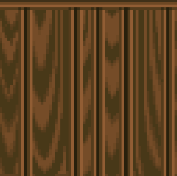
"luz batendo de cima"
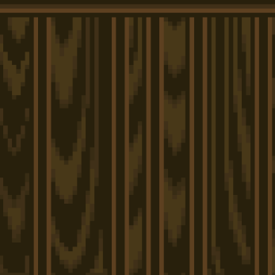
"face em sombra"
- ▶Mesma arte, duas paletas — lit ~30% mais clara
- ▶O raycaster sabe se acertou em X ou Y de graça (vem do DDA)
- ▶Esse bit decide qual versão da textura amostrar
- ▶Custo em RAM: 2× textures · custo em CPU: 0
4.7.7.3 · Figura 4.56 — baked lighting muda a leitura da cena
Sem & Com Baked Lighting
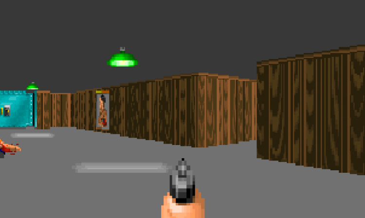
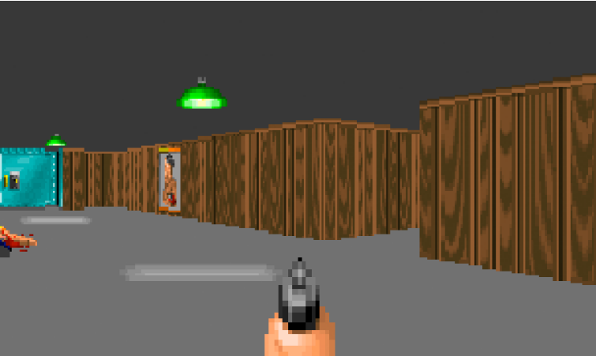
4.7.7.4 · Porta deixa o tile parcialmente atravessável
O Tile Deixa de Ser Binário
- ▶Até aqui, cada passo do DDA tinha uma resposta simples: vazio continua, parede para
- ▶A porta cria um terceiro caso: ela ocupa o tile, mas sua face pode estar no meio do caminho
- ▶Uma porta fechada se comporta como parede; uma porta aberta se comporta como espaço
- ▶No meio da animação, o raycaster precisa testar a posição atual da face, não só o tipo do tile
4.7.7.4 · Face móvel da porta ajusta a colisão do raio
A Porta Parece 3D, Mas É Um Caso do Raycaster

4.7.7.4 · Figura 4.57 — doorposition decide colisão
O Teste Que Decide: Bate ou Atravessa?

4.7.7.4 · Estado da porta vira intercept para desenhar a coluna
A Porta É Estado + Um Intercept Ajustado
// max number of sliding doors #define MAXDOORS 64 // leading edge of door // 0 = closed, 0xFFFF = fully open unsigned doorposition[MAXDOORS];
if (tile == DOOR) { edge = AX + ystep / 2; if (edge < doorposition[doorIndex]) continue_ray(); else hit_door(); }
- ▶O raycaster não cria geometria nova; ele entrega um ponto de colisão mais preciso
- ▶O renderer usa esse ponto para escolher textura, coluna e altura projetada
- ▶A ilusão vem de tratar uma animação 2D como uma parede dinâmica
4.7.7.5 · Push wall desloca a face antes do teste do raio
Push Walls: A Mesma Ideia, Com Offset
- ▶Push walls também são resolvidas dentro do raycaster, não por um sistema físico separado
- ▶Quando ativadas, elas continuam associadas ao tile original, mas sua face avança
- ▶O truque é somar um offset nas coordenadas de intercept do raio
- ▶Para o renderer, parece que a parede realmente saiu andando pelo corredor
if (tile == PUSHWALL && pushwall.active) { interceptX += pushOffsetX; interceptY += pushOffsetY; hit_pushwall(); }